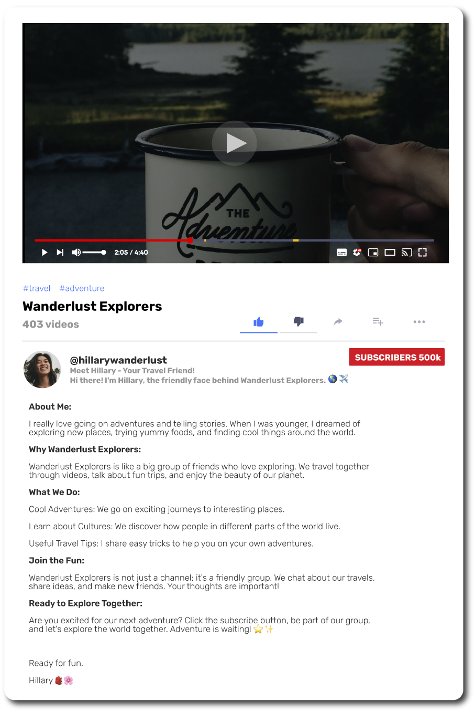

Aguarde enquanto o conteúdo é carregado.
Nesta unidade, você vai aprender a:
Before your trip, prepare a travel health kit with items you may need, especially those that are difficult to find on your trip.
What else do you need to carry in your first aid kit?
Use a dictionary to help you make a list of items.
Smart health tips for travelers
Read the article below, containing tips for you to stay safe during your international trip, and match the headings with the paragraphs.
Hello! Traveling is exciting, but it's essential to stay healthy during your trip. Here are some easy tips for you:
When you travel, you might forget to drink water. Always carry a water bottle and drink lots of water. It helps you stay hydrated and feel good.
Try to eat fruits like apples, bananas, or oranges. They are easy to carry and good for your health. Also, eat vegetables like carrots or cucumbers when you can.
Before eating and after using the bathroom, wash your hands with soap and water. This helps keep germs away.
Traveling can be tiring. Try to sleep enough at night. If you feel tired during the day, take short breaks and relax.
Walk around and explore new places. It's good for your body and helps you see many exciting things.
If it's sunny, wear a hat and sunglasses. Also, use sunscreen to protect your skin from the sun.
Sometimes, street food can make you sick. It's better to eat in clean places or cook your food if possible.
If you have any health problems or allergies, remember to bring your medicine. Also, a small first-aid kit with band-aids and pain relievers can be helpful.
Always be careful when crossing the road or walking in new places. Follow the rules and listen to locals if they give you advice.
If you feel sick or have questions about your health, find a doctor or a pharmacy. They can help you feel better.
Remember, staying healthy is essential, so take care of yourself while you explore new places. Have a safe and enjoyable trip!
Your opinion:
Read the following comics of people talking to a doctor in a clinic.
Patient: Hello, Doctor. I feel under the weather today.
Doctor: Hi there. I'm sorry to hear that. Can you tell me more about how you're feeling?
Patient: I feel fatigued, and I have a sore throat.
Doctor: I see. Let me check your temperature.[Doctor checks the patient's temperature]
Doctor: It seems you have a slight fever. I'll give you medicine for your sore throat. Make sure to rest and drink plenty of fluids.
Patient: Thank you, Doctor.
Doctor: You're welcome. If your symptoms persist, come back for a follow-up.
Patient: Good morning, Doctor. I have pain in my chest, and I've been coughing.
Doctor: Hello. I'm sorry to hear that. Let's check a few things. Can you describe the pain in your chest?
Patient: It feels tight, and the coughing has been persistent
Doctor: I'll listen to your chest. Take deep breaths for me.
[Doctor listens to the patient's chest]
Doctor: I recommend some tests to understand better. In the meantime, I'll prescribe medicine for the cough. If the pain persists or gets worse, go to the emergency room.
Patient: Thank you, Doctor.
Doctor: You're welcome. Take care, and come back if you need further assistance.
What symptoms do the patients mention in the comics?
We hope you do not have to use this vocabulary during your trip, but it is important to know how to describe your symptoms if you have any health issues while traveling abroad.
Expressions:
I feel under the weather today.
I’m a bit out of it today.
I think I’m coming down with something.
I’ve been better.
I feel terrible/sick.
I don’t feel well.
Expressing symptoms:
I feel...
...nauseous.
...dizzy.
...weak.
...short of breath.
...fatigued/tired.
I have pain...
...in my chest.
...in my hip.
...in my ribs.
...in my stomach.
...in my mouth.
I have...
...a headache.
...a stomachache.
...a stuffy nose.
...a runny nose.
...a fever.
...a sore throat.
...a loss of appetite.
I have been...
...vomiting/puking/throwing up.
...coughing.
...sneezing.
...wheezing.
Now, imagine that you have the following conditions. What symptoms can you describe?
Example:
You have a cold.
I feel tired and I have a runny nose and a fever.
Your turn:
You have food poisoning.
You are pregnant.
You have a hangover.
In pairs, create two dialogues between a patient and a doctor at the hospital, and practice them with your partner.
Do you follow any travel influencers on YouTube or Instagram? What do they talk about?
Can you recommend any YouTube channels related to travel to your colleagues?
Hillary is the host of Wanderlust Explorers, a YouTube channel that provides all kinds of tips related to travel. Read Hillary’s profile and take the quiz about it.
Wanderlust Explorers
@hillarywanderlust – 500k subscribers – 403 videos
Meet Hillary - Your Travel Friend!
Hi there! I'm Hillary, the friendly face behind Wanderlust Explorers. 🌍✈️
About Me:
I really love going on adventures and telling stories. When I was younger, I dreamed of exploring new places, trying yummy foods, and finding cool things around the world.
Why Wanderlust Explorers:
Wanderlust Explorers is like a big group of friends who love exploring. We travel together through videos, talk about fun trips, and enjoy the beauty of our planet.
What We Do:
Cool Adventures: We go on exciting journeys to interesting places.
Learn about Cultures: We discover how people in different parts of the world live.
Useful Travel Tips: I share easy tricks to help you on your own adventures.
Join the Fun:
Wanderlust Explorers is not just a channel; it's a friendly group. We chat about our travels, share ideas, and make new friends. Your thoughts are important!
Ready to Explore Together:
Are you excited for our next adventure? Click the subscribe button, be part of our group, and let's explore the world together. Adventure is waiting! 🌟✨
Ready for fun,
Hillary 🎒🌺
Take the quiz to check your comprehension.
1) What is Hillary's goal with Wanderlust Explorers?
Você escolheu a resposta correta.
Você escolheu a resposta errada. Tente novamente.
2) How does Hillary describe Wanderlust Explorers as a community?
Você escolheu a resposta correta.
Você escolheu a resposta errada. Tente novamente.
3) What kind of adventures does Hillary go on?
Você escolheu a resposta correta.
Você escolheu a resposta errada. Tente novamente.
4) What does Hillary want viewers to do to be part of Wanderlust Explorers?
Você escolheu a resposta correta.
Você escolheu a resposta errada. Tente novamente.
5) According to Hillary, what is waiting for you?
Você escolheu a resposta correta.
Você escolheu a resposta errada. Tente novamente.
Gabarito: 1 – B / 2 – B / 3 – B / 4 – B / 5 - B
Watch a popular video posted by Hillary on Wanderlust Explorers a few months ago, about dealing with emergencies while traveling.
Title: What to Do in an Emergency While Traveling - A Simple Guide for Beginners
[Opening Scene: Friendly smile and wave]
Host: "Hey there, fellow travelers! Welcome back to our channel. Today, we're talking about what to do in case of an emergency when you're traveling. Whether you're a seasoned explorer or it's your first time abroad, it's essential to know how to handle unexpected situations. So, let's dive in!"
Segment 1: Call for Help
Host: "First things first, if something goes wrong, call for help. Just like at home, different countries have their own emergency numbers. Make sure you know what it is before you go."
Segment 2: Find Your Embassy
Host: "Next up, find your country's embassy or consulate. They're like your home away from home. They can help if you lose your passport or need assistance."
Segment 3: Tell Your Travel Insurance
Host: "If you've got travel insurance, give them a heads up. They're there to guide you and provide assistance, so don't hesitate to reach out."
Segment 4: Talk to Local Authorities
Host: "Contact the local police or authorities to report the emergency or ask for help. They are there to assist you, so don't be afraid to reach out."
Segment 5: Inform Family and Friends
Host: "Don't forget to tell your family or friends. They can provide support and help coordinate assistance from your home country."
Segment 6: Use Emergency Apps
Host: "Some countries have apps designed for emergencies. Familiarize yourself with them before your trip, so you're prepared if something unexpected happens."
Segment 7: Stay Calm
Host: "In any emergency, it's crucial to stay calm. Follow local rules and advice. Take a deep breath, and you'll handle the situation better."
Segment 8: Keep Important Papers Safe
Host: "Keep your important documents like your passport, ID, and emergency contacts in a safe but accessible place. It makes things easier in stressful situations."
Segment 9: Register with the Embassy
Host: "Consider registering with your embassy before you travel. It helps them assist you more effectively if needed."
Segment 10: Learn Basic Phrases
Host: "Lastly, learn a few basic local phrases for emergencies. It's like having a secret tool that can really come in handy."
[Closing Scene: Friendly wave and smile]
Host: "And that's it for today's video! I hope you found these tips helpful. Remember, preparation is key, so stay informed and stay safe out there. If you enjoyed this video, give it a thumbs up, subscribe for more travel tips, and we'll see you in the next one. Happy travels!"
Work in Pairs. Create a YouTube video script giving 10 tips for travelers going to a city of your choice. Record the video on your phone and show it to your group!